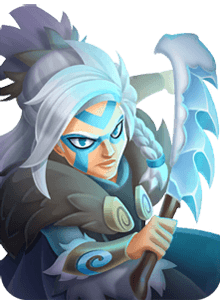

This page is under construction. We are slowly adding summaries of units. If you would like to contribute, please contact the mods on the official wiki server.

Dakini
Summary:A melee unit with 6 members and a focus on damaging and stunning enemies, making them frail and ineffective to stun immunity. They're primarily an alternative to Goblins to sacrifice and power up El Bandolero when a slightly sturdier option with some utility is appreciated, but as a result, should not be heavily invested in and likely won't make the cut for Wishlist.
Pros:- 6 member population and Hunter Faction can make them a neat side-grade of Goblins as a sacrificial unit to power up El Bandolero.
- Permanent Attack Speed and Movement Speed debuff after stunning an enemy can cripple Melee units.
Cons:- Won't die immediately like Goblins due to higher HP, which is usually a bigger need to get El Bandolero's boost as soon as possible for modes such as Adventure.
- Skills are built around stunning, making them weak against any kind of stun immunity.
- Lower population count than Goblins' 8 members makes them difficult to justify without some investment to properly differentiate them.
Pairs well with:- El Bandolero:If you need an option over Goblin to delay El Bandolero's invincibility and attack speed boost.
Does poorly against:- Stun Immunity: Spirited Tiger protects all allies in an area and Armored Troll naturally has stun protection. When Dakini can't stun, their potential is severely hurt.
- Area of Effect Damage:Units like Werewolf and Swashbuckler that can hit multiple units with high damaging attacks can quickly kill off Dakini before they get a chance to cause much damage, at which point, you may as well have run Goblins.

Dwarf Engineer
Pros:
Ranged unit so she attacks from a distance. Spawns turrets that simultaneously do damage and also boost Dwarf Engineer's damage stat. She's in the clan shop and can be built slowly without spending money.
Cons:
Low health so is vulnerable to assassins. She does not deal any damage whilst she is placing turrets down.
Gear:
Attack gear with attack secondary - you may be thinking "Why not Cooldown Gear?" and this is because whilst yes this would cause her damage to increase faster from turret placement she actually spends so much time in her long-ish turret placing animation that it decreases her damage output so 15% secondary cooldown reduction at most.
Game Modes:
Dwarf Engineer is one of few units that truly excel in every gamemode.
Investment:
She's pretty usable out of the box but she truly shines once her skills are upgraded and she's got a few ranks and levels on her.
Other Information:
Due to her high attack damage stats she will often draw the attention of skills from Sylvan Spirit and Bloodlust Bullet that targets the highest Damage Unit - this can either be a pro or a con depending on circumstance.

Eira
Gear Priority:
Cooldown (P), Cooldown, Attack - 50% Cooldown lets Eira capitalize on her Freeze duration, with any bonus damage you can get a nice bonus to inflict damage faster.
Pros:
Access to the rare Freeze status, can keep it up nearly 100% of the time to keep units locked down. and no meta-relevant unit is immune to Freeze. Multi-population unit means Freeze has a deceptively bigger radius and can potentially desync to permanently Freeze a target.
Cons:
Lacks in Ancient Boss Battles, as they're all immune to freeze and she's fragile.
Investment:
High - Needs 50% Cooldown in gear, Maxed Freeze duration and radius, etc. to truly shine.
Synergies:
Toad Druid can keep a unit stunned long enough for Eira to take over afterwards with her freeze.
Counters/Checks:
Elemental Witch can entangle Eira before she gets close and slows her to a crawl. Melee units on top of her path can distract her and can kill her before she gets a freeze off.

El Bandolero
Gear Priority:
Attack (P), Attack - Needs as much base damage as possible for Main Skill to scale up higher.
Pros:
Highest single target DPS potential for a Melee unit when enough allied units have died. Invincibility to damage and status effects for 8s from Last Man Standing gives him a long duration to deal damage uninterrupted. Effective in most game modes, able to deal big damage to Ancients and push against stronger armies in other modes.
Cons:
Can be difficult to fit into Arena team at higher ranks due to defenses having two extra units and lack of many strong multi-population units to use. Sluggish and low damage prior to Last Man Standing buff activating. Single target DPS makes him vulnerable to being help up by the frontline and damaged by threatening Ranged and Mage units in the backrow. Necessitates running weaker units such as Goblins and Dakini to maximize his effectiveness.
Investment:
Low - Should rank up a few times for Bonus Damage on Main Skill to scale faster and get more invincibility time. Goblins are low investment as a partner but other multi-population units may provide a higher ceiling.

Elemental Witch
Gear Priority:
Attack Speed (P), Attack Speed - Elemental Witch would like to attack as quickly as possible to maintain uptime on her AoE stun and knockback. Her high base damage allows her to forego extra damage.
Pros:
Applies Knockback and Entangle, two status effects currently unresisted by all units. This allows her to interrupt abilities such as Spirited Tiger's self heal despite his stun immunity.High entangle chance makes her less susceptible to Melee and Assassins than other Mages and she's even capable of Entangling invisible units.Large aura that reduces Attack Speed and Movement Speed considerably, severely limiting the enemy front row's capabilities.
Cons:
Her skills are less effective on Ranged and Mage units as they tend to be spread out and outside range of her skills.Weak contributor in Ancient boss battles due their status immunities.
Investment:
Medium - She would like a good set of Attack Speed gear to get her attack speed as fast as possible, and she'd like levels in many of her skills so that they have larger reach and higher chances of Entangling. On the other hand, she has little competition for Attack Speed gear, lower the opportunity cost.

Explorabbit
Pros:
Large, targeted AoE that induces burn - which pairs well with burn units. The damage alone can often one shot squishier mages and multipop units. Bunny is invulnerable from the start of the battle + while travelling, and therefore cannot be stunned/frozen/etc before at least getting off one round of eggs.
Cons:
Not very tanky - dies quick when it gets targeted. In many cases, you have to select a unit to sacrifice just to buy time to deal with bunny before he goes back underground. Having to play around Bunny can lead to units being placed in suboptimal places. Bunny is not a targeted assassin in the sense that you can’t drop him on a specific spot like Toad or Eira. Bunny is invulnerable from the start of the battle + while travelling, and therefore cannot be stunned/frozen/etc before at least getting off one round of eggs.
Gear:
50% cd as it helps this unit have very little time where it can be targeted and killed.
Game Modes:
In short - any non-ancient game modes, really. In upper Towers he is good, but in lower towers you should ideally be clearing the room before he would even pop up, so I would not use him unless the battle is expected to go on for at least 10 seconds.
Investment:
To be viable in midgame he needs at least 30% CDR gear. Bunny really depends on your general game progress and the types of opponents you can expect to face. A good indicator is, if he’s not killing his first target, he’s probably not quite strong enough to run yet.
Other Info:
Leshy in particular is a good counter because it often wastes time backtracking to target the new spawns.

Necromancer Rat
Summary:The only unit available that can continuously spawn minions. This can make him the most important unit in some Giant Hunt events and certain lineups where the enemy army lacks area-of-effect damage abilities. Any kind of unit that has an AoE however will quickly demolish Necromancer's rats and lower his overall usefulness.
Pros:- Can constantly summon minions that, while weak, can stall out units that can only attack single targets if they can't kill them faster than Necromancer Rat can produce them.
- Fantastic unit in many Giant Hunt events where the boss is only capable of killing one unit at a time, such as Oni Warrior.
Cons:- Low range for a Mage puts him close to the front line and closer in range to dangerous attacks from units like Elemental Witch and Storm.
- Can't do much if his rats get overrun quickly.
- Generally a weak unit for Ancients since bosses have large attacks that can clear all summoned rats.
Pairs well with:- Battle Drummer:Boosts all of the rats, granting them extra damage.
- Taunt:Taunt users can keep enemies off the rats, allowing them to live longer.
Does poorly against:- Area of Effect: Werewolf, Swashbuckler, and several other units can throw out attacks that kill all nearby rats. Werewolf especially can get stronger off each rat killed.

SPIRITED TIGER
Pros:
Can self heal. Immune to being Stunned. Gives immunity to Stun to units in a radius around him. His fragments are in Clan Shop which makes him easier to build compared to other tank units. Has an x% chance to rebound projectiles back at the shooter which can help take down those ranged units.
Cons:
Very slow, and if drinking animation is interrupted he fails to self-heal. In matches where he is your last remaining unit, even with maxed skills, there is a good chance you will lose to timeout. Without being able to run 2 Tiger's you will have to decide whether you initially want him to tank at the front of your army or provide Stun immunity to your backline.
Gear:
Full Defence (defence caps at 95% so aim for this number) with 15% CD if you can but Health and Block Chance are good other sub rolls.
Game Modes:
All PvP modes and all other modes besides Ancient bosses and Giant Hunts.
Investment:
He is usable right out of the gate for Stun protection and as an early game tank but mid-late game he needs investment to be able to do a good job tanking.
Other Information:
This is not specific to Tiger, but his protection radius skews downwards. Units placed above and behind him may not benefit from stun protection despite initially being in his radius due to their individual movement patterns. Just being in his circle at the start of the match does not guarantee stun immunity.

STORM
Summary:Strong Mage unit capable of damaging and potentially killing multiple enemies across the map with stuns and large damage from her bouncing attacks and Main skill. Works best with other Electrocute units as her own Electrocute is less reliable.
Pros:- Attacks that bounce between up to 7 targets lets her hit enemies in the front and backlines simultaneously.
- High attack speed lets her get in multiple hits and chances for Electrocute and stun on enemies.
- Big damage on Main Skill that can hit enemies anywhere on the map as long as they're Electrocuted.
Cons:- Her own Electrocute is RNG dependent, so she's reliant on other Electocute units to apply it more consistently for her (investment needed).
Pairs well with:- Electrocute:Thor, Hermes, Thundershot, etc. can apply Electrocute to different parts of the map, making her less dependent on applying her own Electrocute and allowing her to hit more enemies with her main skill.
Does poorly against:- Stun Immunity:While units immune to Stun can still be Electrocuted, this can still hamper her utility.
- Multi-population:Multi-population units can eat the bounce on her attacks, making it more difficult to hit other priority targets.
- Assassins: Can remove her before she causes much trouble.

Swash Buckler
Pros:
Even though Swashbuckler is a melee unit he has a ranged attack which can be strategically used to take down enemies backline.
Has a skill that increases all damage output, not just his main skill damage.
Cons:
His main skill has a long load up time. If he is interrupted before the ranged hit starts travelling, it will not happen.
Travels really fast so if you are not careful he will run in front of your tanks and die really easily.
Gear:
Attack gear with 15% Cooldown reduction - this way he can fire off Riposte as often as possible without sacrificing damage.
Game Modes:
Good in all game modes.
One of the best units for Adventure nodes and strong in arena.
A good melee option against ancients - especially helpful against Spider's minions.
Investment:
Great first melee to unlock - roughly mid amount of investment otherwise.
Other Information:
His “ranged hit” (Riposte) is not treated as a ranged hit in game. It cannot be blocked by block chance or Archangel, nor can it be deflected by Tiger.
At skill level 3, Riposte travels from your backline to the enemy’s backline. When fired from half court, it goes offscreen entirely. I believe this is a good stopping point for a long time while you work on other units’ abilities.
Swashbuckler's Riposte skill seems to be doing more than 25% of his damage so keep this in mind when using or versing him.

Sylvan Spirit
Gear Priority:
Cooldown (P), Cooldown (S), HP - Higher cooldown gives your Main Skill 100% uptime, which is really important since Sylvan isn't doing much if its skill isn't being applied. Extra HP secondaries can be good for tanking extra hits in Ancient but is not a priority.
Pros:
Has the largest raw Defense drop of all units, able to stack with another Sylvan Spirit and is unresisted by everything, including Ancients. It drastically boosts the damage potential of the rest of your army. 2 Sylvan Spirits can drop units to 0% Movement Speed, effectively locking them in place. Only source of removal and prevention for the powerful Rage buff, further reducing potential enemy damage if they have units like Battle Drummer on their team.
Cons:
Targets the unit with the highest Attack, which can make it easy to exploit and counter in non-Ancient modes.Is quite passive on its own so the rest of the army needs to make up for its own lack of damage.
Investment:
Low - A new copy of Sylvan is great right out of the gate and it only gets better with extra skill levels and Cooldown gear. Since it's got a strong skill that isn't dependent on its damage or tanking stats, it's not as dependent on rank or unit level for its effectiveness.